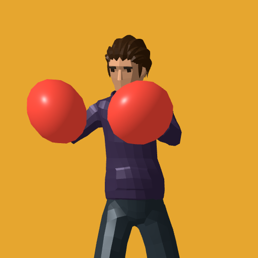

<- all projects

Haymaker
PC
Volume
Live
Read the tell, slip the punch and build a champion in this 3D boxing career.
Frankie Ruiz walks into Sal's Gym with two pizzas and walks out with a trainer. His sister Nina handles the books and Sal Benedetti handles the corner as Frankie climbs the Club, Contender and Platinum circuits toward Lex Vance, a champion whose manager would rather buy the result. Watch for a dropped shoulder, slip the punch and turn the opening into a clean counter. Beat twenty story opponents, unlock ten remixed rematches, train in four timing drills and build Footwork, Chin, Power and Stamina skill trees.